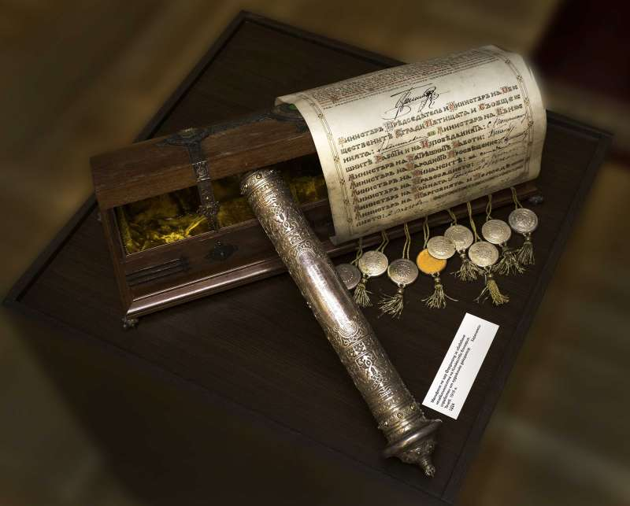

1908 - Declaration of Bulgarian independence

The independence of Bulgaria was proclaimed with a manifesto on September 22, 1908 in the church
"St. Forty Martyrs ”in Tarnovo. The independent Bulgarian kingdom was recognized by the Great Powers
in the spring of 1909. Prince Ferdinand I accepted the title of King of the Bulgarians. A commemorative
medal is established on this occasion. The next day, Austria-Hungary annexed Bosnia and Herzegovina.
Bulgaria responded to the threats of war by the Ottoman Empire with military mobilization and at the
same time declared its readiness for a peaceful settlement. As the Berlin Treaty has been doubly violated
(by Sofia and Vienna), and the Great Powers are not ready for a large-scale war, efforts are focused on
diplomatic recognition of Bulgarian independence. An interesting point is the recognition of this title.
The word "king" comes from Caesar and Caesar. As long as Russia claims to be the "Third Rome", no other
Orthodox country dares to introduce this title. In 1910, in preparation for the Balkan wars,
Tsar Ferdinand was in St. Petersburg, where they organized a solemn "royal" ceremony to welcome him.
Preconditions have been created for the liberation of the last remaining Bulgarian lands in Ottoman rule
in Thrace and Macedonia.